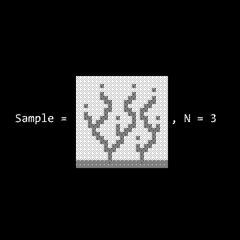

An Introduction to the Wave Function Collapse Algorithm
First developed in October 2016 by Maxim Gumin (based on an earlier 2009 algorithm called Model Synthesis by Paul Merrell), the wfc algorithm is a method of generating novel textures from a given input texture. The main reason this algorithm is interesting is that the output is locally similar to the input, as defined in the repository:
That essentially just means that the output looks like the input, but because it's procedurally generated it can be arbitrarily large and even generated on the fly. Here's an example of it in action from Maxim's repository:
Pretty cool, right?
My Project
If you're like me when you saw that gif, your first instinct would be to poke around and see if you could figure out how it works to make your own. In my experience however, while there are lots of great resources to learn generally how wfc works, there are far fewer in-depth analyses of the algorithm, its quirks, and the difficulties you might face trying to build your own version. The best resource, in my opinion, is Isaac Karth and Adam M. Smith's paper, WaveFunctionCollapse is Constraint Solving in the Wild, which provides a pretty detailed description of some of the main systems in the algorithm.
My goal (over an embarrassingly long span of time) has been to write my own implementation of the algorithm in the Lua language, with LOVE2D to make the graphics easier to handle. While I'm still not quite finished with the algorithm, in these posts I'll be explaining what I've done so far, the problems I've faced and the ways I solved them, and what I'm currently working on as I catch up to myself. All of that will include some actual code I've written (I apologize in advance for my atrocious formatting), and perhaps some diagrams and such depending on how artistic I'm feeling.
Other Resources
Here are some good videos, articles, and papers which I've used in my own research:
- The aforementioned paper by Isaac Karth and Adam M. Smith
- Maxim Gumin's repository
- Oskar Stålberg's talk at EPC2018 on how wfc works
- Brian Bucklew's very interesting talk on using wfc in dungeon generation in Caves of Qud during the 2019 Roguelike Celebration, which I actually got to see in person!
- Robert Heaton's great article called 'The Wavefunction Collapse Algorithm explained very clearly'
Incoming: wfc-guide